Chapter 14. Data Import
This chapter provides an overview of Data Import, a significant feature that can be utilized to import data collected in other systems into the Early Warning, Alert and Response System (EWARS) seamlessly. Using the Data Import feature, you can import different types of data – related to historical diseases, outbreaks or information from laboratories. You can harness data to enhance your operational use of EWARS in line with situational objectives through this feature.
14.1 Data Import scenarios
Using the Data Import feature, you can import data to your account in comma-separated values (CSV) file format. The feature is useful in several scenarios, including the following:
when preloading your account with previously collected/historical data for the same context;
when data collected elsewhere (such as laboratory data or data from district health information software (DHIS)) are required to generate bulletins in EWARS;
when data reported via email or via storage media (such as CSV or Excel files) are required in the system.
14.2 Data Import prerequisites
To import data, you must have a matching EWARS form into which the data can be imported. If not, you should create one via the Forms feature. Refer to Chapter 6. Forms, topic 6.4 Creating a new form for more information on creating a form.
You need to map the columns of the CSV file with the relevant fields of the form. To facilitate smooth import, you should create a form with appropriate response field options. For example, if a variable in the CSV file is binary, with two options (yes/no), you should create a select field (yes/no). For more information, refer to Chapter 6. Forms, topic 6.5.7 Configuring the select field.
It is recommended that you have a clean and a well structured dataset before attempting to import data to the EWARS system.
 Review Review |
the dataset you want to import carefully. Also, review all variables and the clean data, if required. Then create a form in EWARS that matches the variables of the dataset you want to import. |
The following topic explains the import process in more detail.
14.3 Importing data using a CSV file
To import data, follow the steps outlined in Fig. 14.1. Importing data is a four-step process.
Create an import project by uploading a CSV/Excel file, and then edit it.
Map [Mandatory] columns such as reporting location, reporting date and submitted date.
Map the data columns of the CSV file with the form fields, matching the importing dataset with the existing data for harmonization.
Validate, then validate and run the import.
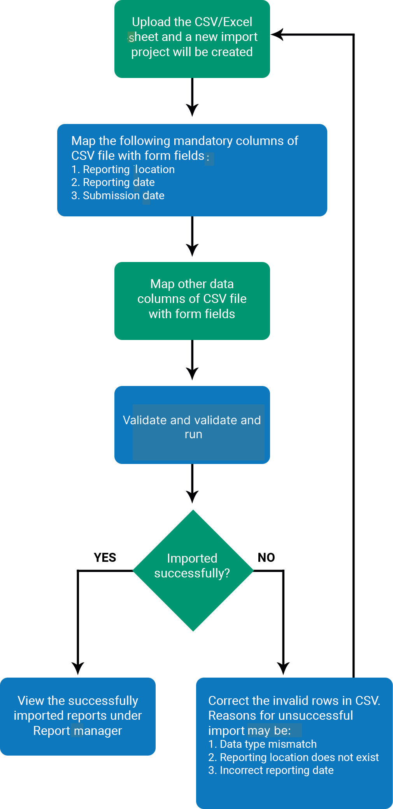
Fig. 14.1. Workflow to import dataStep 1. Create an import project by uploading a CSV file, and then edit it.
- Select Menu > Data Import > click on the form name at the left-hand side (e.g. Event-Based Surveillance Form) > click on Upload CSV/Excel Sheet for new project. Select a CSV file and double-click on it to upload it. A New Import Project is added, as shown below:
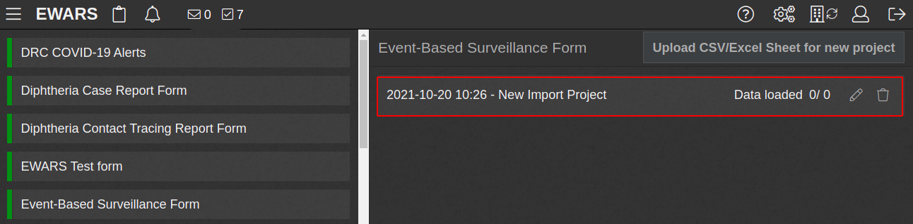
- Click on the edit icon of New Import Project, and the screen below appears:
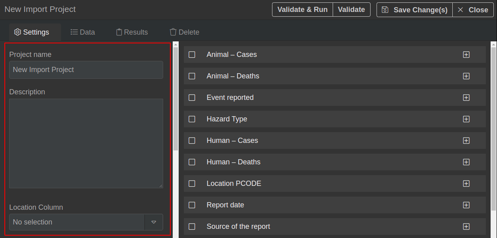
- Enter a Project name (e.g. “EBS data for Nambutu”) > enter a Description (e.g. “Data for the year 2020”). Click on Save Change(s).
Step 2. Map [Mandatory] columns such as reporting location, reporting date and submitted date.
To map the reporting location column, follow the steps below.
For the data import to be successful, the reporting locations must be present in the system before the import is performed. If you are trying to import data for an area or a location type that does not exist in the system, ensure to add locations, locations type prior to import (refer to Chapter 3. Locations, topic 3.2.3 Importing child locations in bulk via a CSV file on adding reporting locations to the system).
EWARS needs to match the importing data with existing locations. It does this by matching one of the three options listed below:
the universally unique identifier (UUID)
the place code (PCODE)
the location name.
For example, if you select the UUID as the location match type, all data under a particular UUID will be saved under the same UUID in the system. The same applies for PCODE and location name.
- Select a CSV file column with a reporting location identifier from the Location Column drop-down menu > select an appropriate location matching the type from the Location Match Type drop-down menu.
 Note: if you are using location name as an identifier, there may be chances of name conflicts. These may arise, for instance, if there are any errors in the location name in the CSV file, or if this differs from the system’s location name. In such cases, data will not be correctly matched to the system location, so it is recommended that you check location names or add a PCODE in the CSV file before importing it to the system. Note: if you are using location name as an identifier, there may be chances of name conflicts. These may arise, for instance, if there are any errors in the location name in the CSV file, or if this differs from the system’s location name. In such cases, data will not be correctly matched to the system location, so it is recommended that you check location names or add a PCODE in the CSV file before importing it to the system. |
- Set Override location type match as Yes > select type of location from the Location type match drop-down menu.
To map the reporting date column, follow the steps below.
Select a CSV file column with a reporting date from the Report Date Column drop-down menu.
Select the matching date format according to the reporting date column of the CSV file from the Report Date Format drop-down menu.
To map the report submission date column, follow the steps below.
Select a CSV file column with a submitted date from the Submitted Date Column drop-down menu.
Select the matching date format according to the submitted date column of the CSV file from the Submitted Date Format drop-down menu.
Step 3. Map the data columns of the CSV file with the form fields.
- Select Menu > Administration > Data Import. Click on the form name, and a list of projects appears. Click on the edit
 icon of your project, and the system lists all columns of the CSV file, as shown in the highlighted part below:
icon of your project, and the system lists all columns of the CSV file, as shown in the highlighted part below:
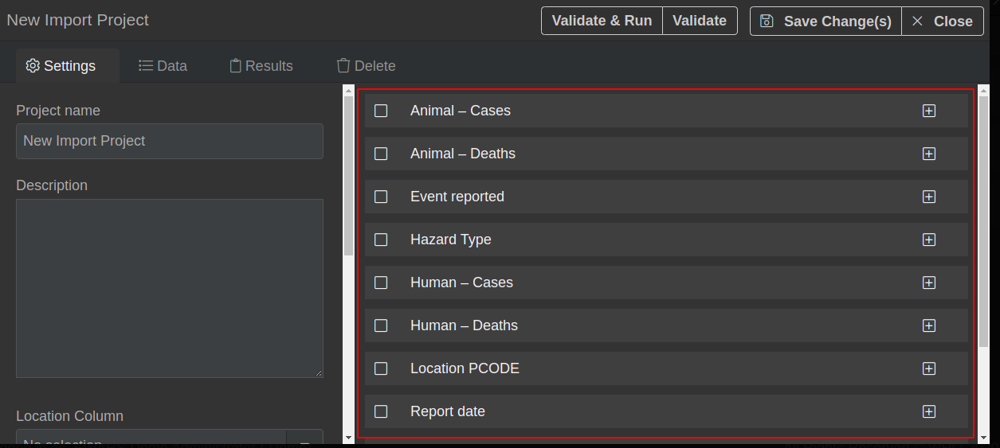
- Click on the expand icon to expand the columns one by one, and the screen below appears:
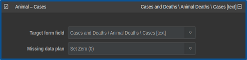
- The Target form field contains all form fields and an Ignore option:
Either select a matching form field from the Target form field drop-down menu to map an expanded CSV column with a selected form field
Or select the Ignore option from the Target form field drop-down menu, and the data for this ignored column will not be imported.
- Choose the missing cell value replacement option from the Missing data plan drop-down menu for empty cells in a CSV file.
| Note: a CSV row is equivalent to a report, and a cell value is equivalent to a field value. |
Set to Ignore Row: in this option, if any cell of the CSV row is empty, then the entire row will not be imported.
Set Zero (0): in this option, empty cells are replaced with Zero (0).
Set NULL: in this option, empty cells are replaced with Null value.
Step 4. Validate, then validate and run the import.
Click on
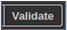
> wait till validation is completed. Click on the tab > check whether the Run State is Valid or Invalid. Valid rows are ready to be imported.Click on
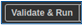
> click on Confirm, and Invalid record(s) remain in the Data tab. Successfully imported records are visible under the Results tab.Click on the Data tab, and Invalid records that are not imported are visible.
The possible reasons for data being deemed Invalid are as follows:
Data type mismatch (e.g. the CSV column has textual data and the form field is numeric)
Reporting location does not exist in the system and needs to be added to the form
Invalid or incorrect formatted date in the reporting date and submitted date columns.
- Reimport the Invalid rows, if any > delete all Invalid rows one by one under the Data tab. To delete a row, click on the delete
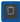
icon > remove successfully imported rows from the CSV file and keep the invalid rows. Correct the invalid rows in the CSV file > Repeat steps 1 to 4 with the corrected CSV file.
To view the successfully imported reports under Report manager, follow the steps below.
- Select Menu > Report manager. Click on the form name > you can check the form details, as shown below:
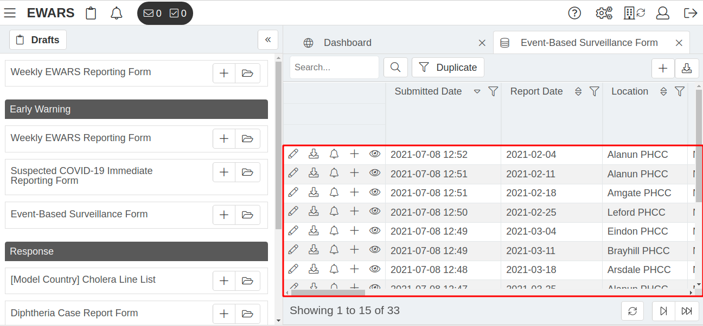
14.4 Deleting an imported project
 WARNING: Deleting an imported project will also delete all data imported from the project. WARNING: Deleting an imported project will also delete all data imported from the project. |
To view the records imported by the project, follow the steps below.
- Select Menu > Data Import. Click on the form name, and a list of projects appears > click on the edit icon of the project > click on the
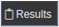
tab, and the imported records appear.
To delete the project, follow the steps below.
- Select Menu > Administration > Data Import > click on form name > list of projects appears > click on the delete icon > click on Confirm. All the data imported by the project and the project are deleted.
14.5 Importing a sample CSV file for the event-based surveillance form
The sample CSV file needs to match the event-based surveillance form of the Model account, as shown below:
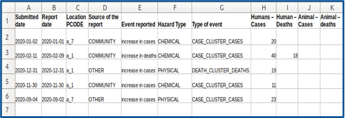
The event-based surveillance form fields are:
Submitted date
Report date
Location PCODE
Source of the report
Event reported
Hazard Type
Type of event
Human – Cases
Human – Deaths
Animal – Cases
Animal – Deaths
To import the sample CSV file, follow the steps below.
Download the sample CSV file from this link: https://ewarscontent.s3.ap-south-1.amazonaws.com/_0464f6fd1cc8/data%20import/ebs_csv/data%20import.csv
Create an import project with the sample CSV file, and then edit it.
Select Menu > Data Import > click on Event-Based Surveillance Form > click on Upload CSV/Excel Sheet for the new project. Select the CSV file and double-click on it to upload it. A New Import Project is added, as shown below:
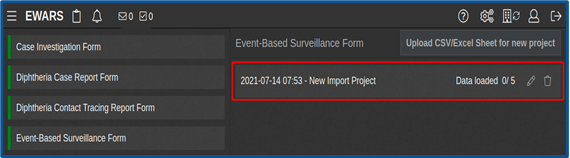
- Click on the edit icon of New Import Project, and the screen below appears:
- Enter a Project name (e.g. “EBS data for Nambutu”) > enter a Description (e.g. “Data for the year 2020”). Click on Save Change(s).
To map the reporting location column, follow the steps below.
- Select Location PCODE from the Location Column drop-down menu > select PCODE from the Location Match Type drop-down menu.
To map the reporting date column, follow the steps below.
Select Report date from the Report Date Column drop-down menu.
Select ISO8601 2017-12-31 (%Y-%m-%d) from the Report Date Format drop-down menu.
To map the report submission date column, follow the steps below.
Select Submitted date from the Submitted Date Column drop-down menu.
Select ISO8601 2017-12-31 (%Y-%m-%d) from the Submitted Date Format drop-down menu.
To map the data columns, follow the steps below.
- To map Animal – Cases with the form field, look for Animal – Cases at the right-hand side and click on the expand icon > select the Cases and Deaths \ Animal Deaths \ Cases [text] field from the Target form field drop-down menu, and the screen below appears:
Set the Missing data plan drop-down menu as Set Zero (0) – this will set zero (0) in Animal – Cases if the cell is empty.
To map Animal – Deaths with the form field, look for Animal – Deaths at the right-hand side and click on the expand icon > select the Cases and Deaths \ Animal Deaths \ Deaths [text] field from the Target form field drop-down menu, and the screen below appears:
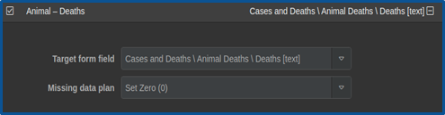
Set the Missing data plan drop-down menu as Set Zero (0) – this will set zero (0) in Animal – Deaths if the cell is empty.
To map Event reported with the form field, look for Event reported at the right-hand side and click on the expand icon > select the Describe the event being reported: [text area] field from the Target form field drop-down menu, and the screen below appears:
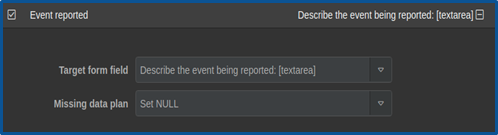
Set the Missing data plan drop-down menu as Set NULL – this will set NULL in Event reported if the cell is empty.
To map Hazard Type with the form field, look for Hazard Type at the right-hand side and click on the expand icon > select the What is the likely hazard type? [select] field from the Target form field drop-down menu, and the screen below appears:
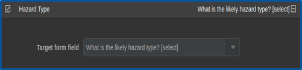
- To map Human – Deaths with the form field, look for Human – Deaths at the right-hand side and click on the expand icon > select the Cases and Deaths \ Human \ Deaths [text] field from the Target form field drop-down menu, and the screen below appears:
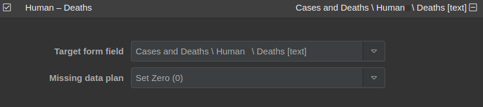
Set the Missing data plan drop-down menu as Set Zero (0) – this will set zero (0) in Human – Deaths if the cell is empty.
To map Human – Cases with the form field, look for Human – Cases at the right-hand side and click on the expand icon > select the Cases and Deaths \ Human \ Cases [text] field from the Target form field drop-down menu, and the screen below appears:
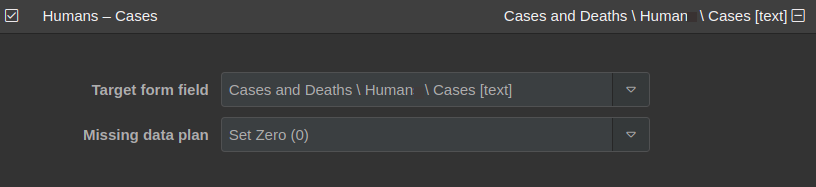
Set the Missing data plan drop-down menu as Set Zero(0) – this will set zero in Human – Cases if the cell is empty.
To map Location PCODE with the form field, look for Location PCODE at the right-hand side and click on the expand icon > select the Ignore field from the Target form field drop-down menu, and the screen below appears:
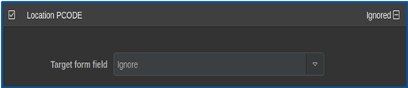
To map Report date with the form field, look for Report date at the right-hand side and click on the expand icon > select the Ignore field from the Target form field drop-down menu, and the screen below appears:
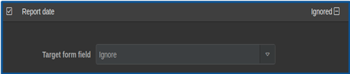
- To map Source of the report with the form field, look for Source of the report at the right-hand side and click on the expand icon > select the Source of the report? [select] field from the Target form field drop-down menu, and the screen below appears:
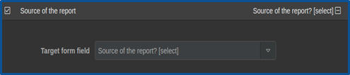
- To map Submitted date with the form field, look for Submitted date at the right-hand side and click on the expand icon > select the Ignore field from the Target form field drop-down menu, and the screen below appears:
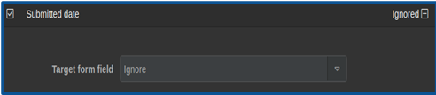
- To map Type of the event with the form field, look for Type of the event at the right-hand side and click on the expand icon > select the What is the type of event? [select] field from the Target form field drop-down menu, and the screen below appears:
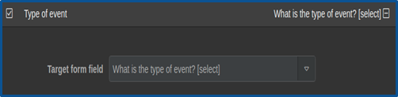
- Once all columns are mapped, click on Save Change(s).
To validate and import the CSV file, follow the steps below.
- Click on > wait until validation is completed. Click on the tab, and the screen below appears, with VALID in the Run State column:
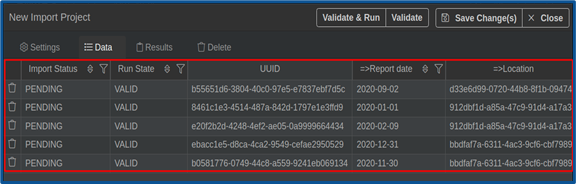
- Click on > click on Confirm, and successfully imported record(s) are visible under the Results tab. Click on Completed.
To view the import data under Report manager, follow the steps below.
- Select Menu > Report manager. Click on Event-Based Surveillance Form, and the record is visible, as shown below:
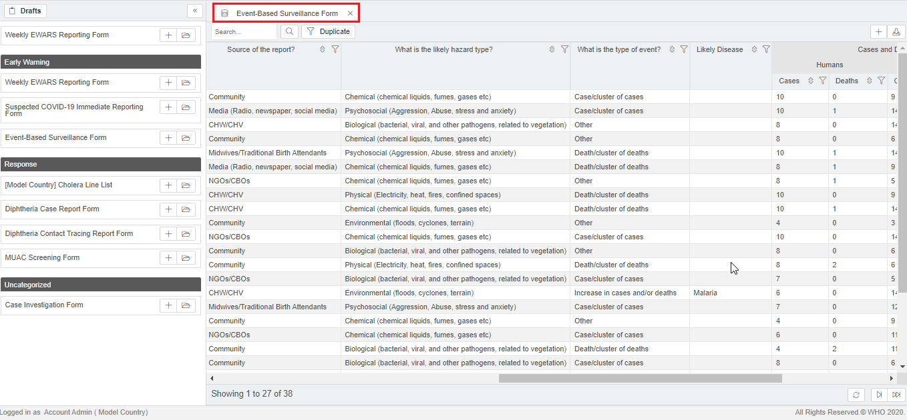
The screenshot above shows all the successfully imported records.
The following chapters will help you plot data within EWARS effectively for visual analysis, presentations and summaries.